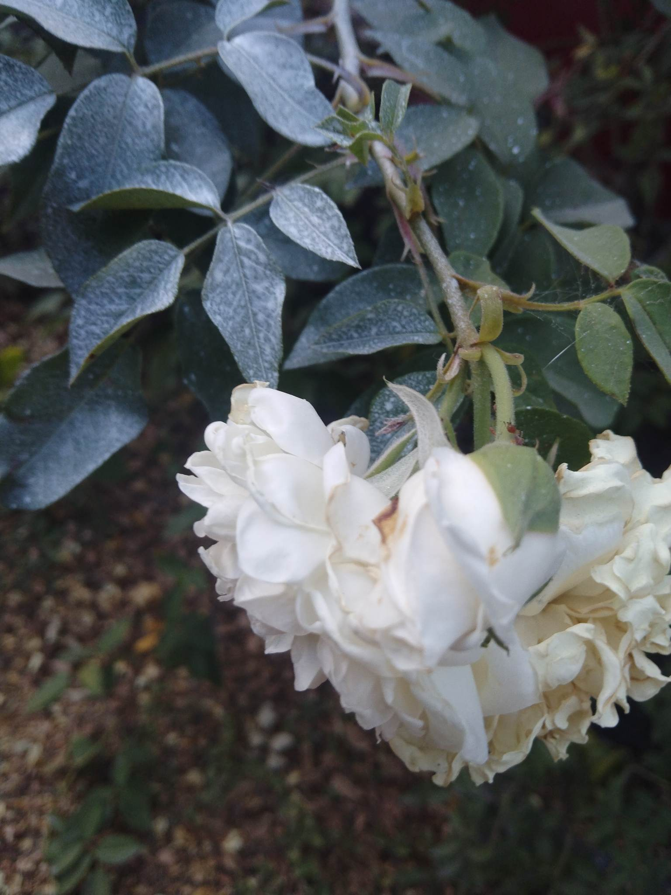
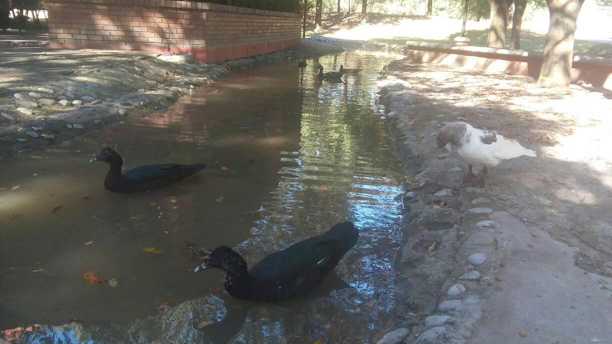
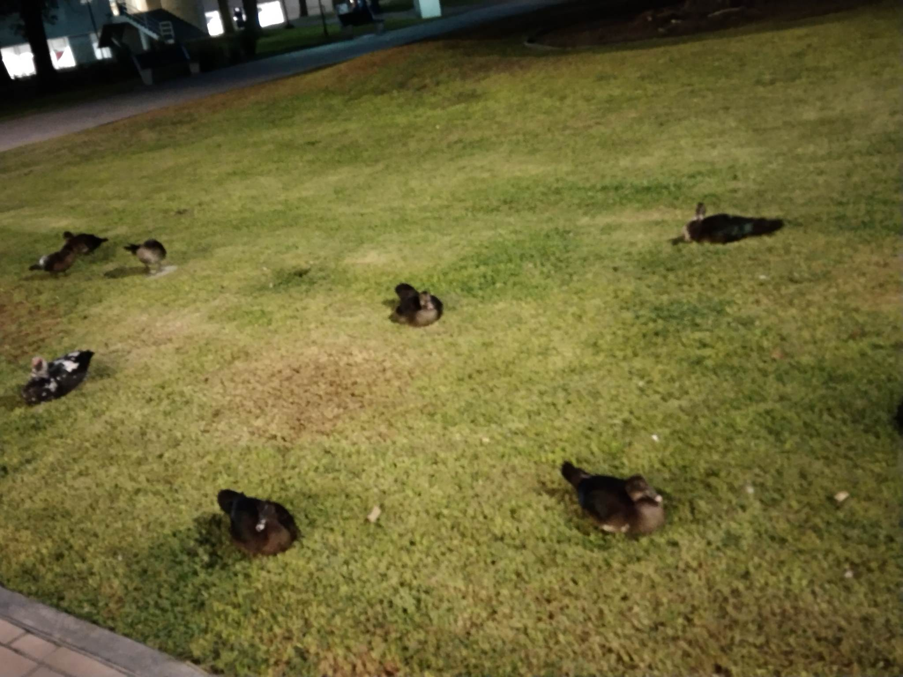

Aclarando que hay que mantener la esperanza en todo momento, es importante reflexionar acerca de el porque se originan los problemas. Ya que eso es la clave a poder encontrar las soluciones óptima
Siento yo estudiante universitario, he vivido varias cosas que me han impedido completar las actividades y mantener mi salud mental de una forma correcta.
Analizando internamente mi vida algunos de los factores importantes que han afectado la realización de mis proyectos fueron:
Esos factores afectan la hora de cumplir con mis deberes
Habiendo encontrado esos problemas uno puede nadamas dejarlo así y no tratar de proseguir. Yo al contrario siento que es importante buscar soluciones a esos problemas. Por lo tantoes importante pelear contra la desdicha de no querer hacer algo al respecto para mejorar la situación personal y obtener una resolución de problemas.
Con eso en mente no debemos tomarnos a la ligera esto. No es un camino fácil y no debemos esperar a obtener soluciones en bandeja de plata.
Más bien es un proceso largo que se tiene que hacer de forma constante para obtener una mejora.
Cada quien es diferente y no debemos sentirnos desalentados comparandonos con los demás.
Más bien mantengamos la esperanza y empezemos a trabajar. Paso por paso, poco a poco.
